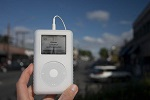
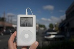
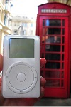

마이팟에 오신걸 환영합니다.
여러분의 아이팟을 과시할 공간에 오신걸 환영합니다. 참영하고 싶나요? 아이팟 1세대부터최신 아이팟 나노, 아이팟 중 가장 작은 아이팟 셔플이나 아이팟 중 가장 큰 아이팟 비디오 중에서 한 가지 모델이라도 있으면 됩니다. 디지털 카메라도 필요하고요. 가장 좋아하는 장소에서 여러분의 아이팟을 사진을 담아, 마이팟으로 보내주세요. 자, 무엇을 기다리고 있나요?
시애틀, 워싱터
시애틀의 아이팟! 비구름과 스페이슬 니들을 볼 수 있습니다. 628번지 커피숍은 볼 수 없습니다.


 

버밍햄, 영국
여기 버밍햄 근처의 아이팟 사진들이 몇 장 있군요. 이곳에도 아이팟을 사랑하는 열정적인 사람들이 분명히 있을 거에요. 전통적인 영국식 빨간 공중전화박스를 확인해 보세요!
